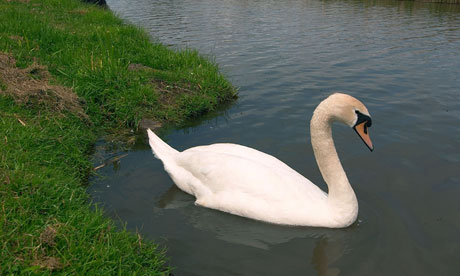

Wednesday, April the 13th, 2011
back to: title, date or indexes
Yesterday, an idea for an opera. Today, an idea for a ballet, courtesy of the magnificent headline
Swan ‘falls in love’ with a tractor
I do think they could have omitted those pesky inverted commas. The ballet would have to have a role for animal behaviourist Daniela Fiutak, who could communicate her insight “The swan presumably had contact with machines during puberty. He sees the tractor as a sexual partner” through the medium of interpretive dance.
